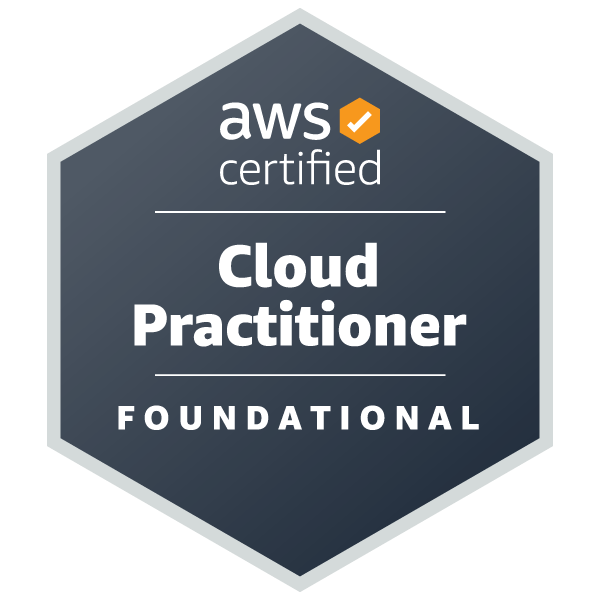
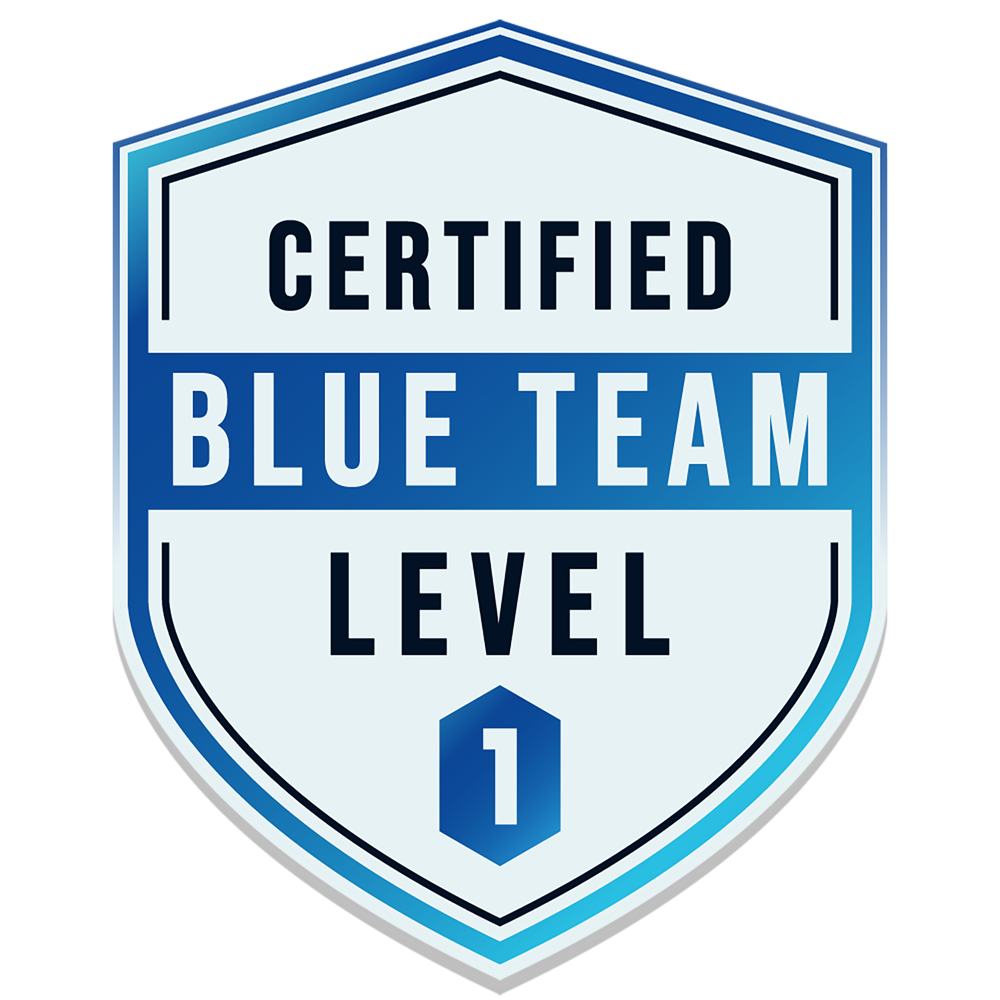
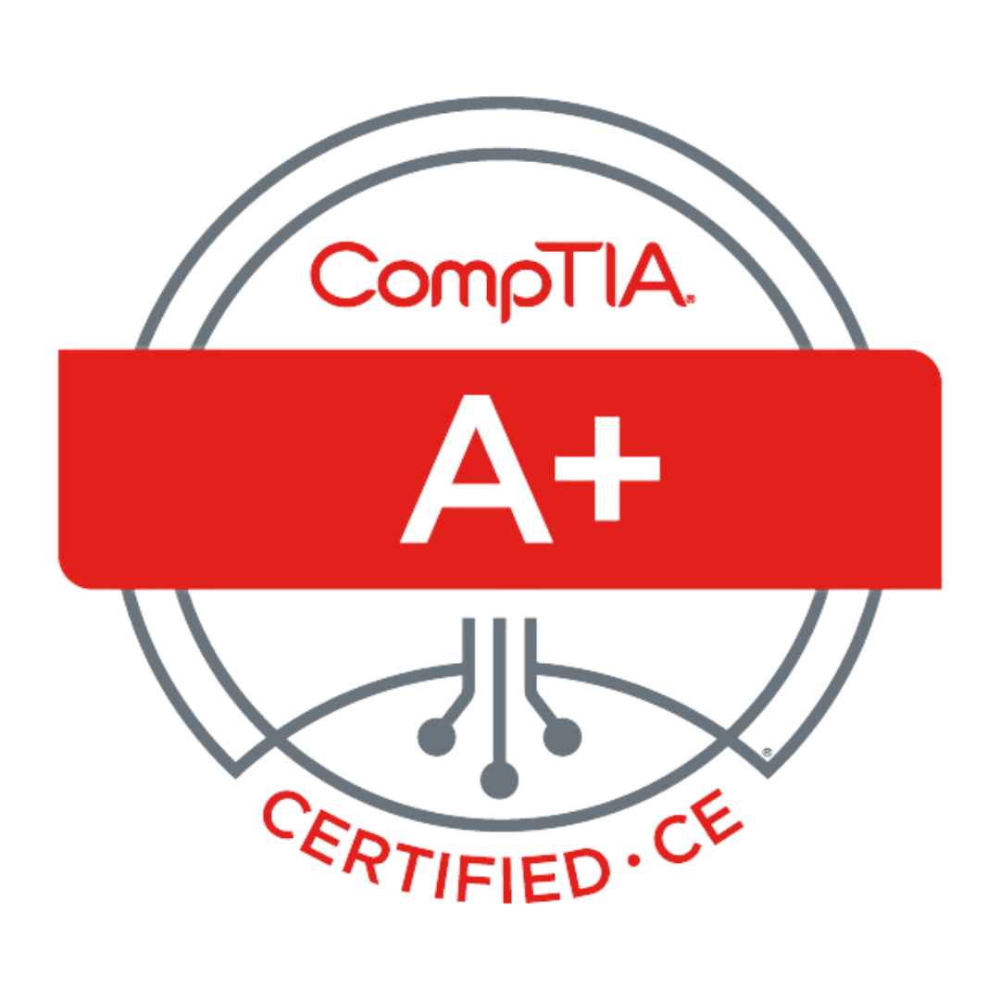

Security Blue Team – Faces of SBT
Featured as the Student Support Lead, sharing my experience whilst growing into my leadership role.
Read the feature →
Security Operations & Cloud Automation — BTL1 · Azure · AWS
My career started on the frontline — resolving thousands of student queries, managing escalations, and maintaining high CSAT performance.
But what stood out wasn't just the issues.
It was the patterns behind them.
Why were certain problems recurring?
Why were workflows inefficient?
How could systems be improved instead of repeatedly patched?
That curiosity led me into cloud infrastructure, automation, and security monitoring.
Today, I operate at the intersection of:
I believe strong infrastructure isn't just secure — it's intuitive, efficient, and designed with real users in mind.
Security Blue Team
Jan 2026 – Present
Security Blue Team
Jan 2025 – Jan 2026
Security Blue Team
Nov 2023 – Jan 2025




University of Hertfordshire
Focused on cybersecurity, systems architecture, and secure software principles.
West Herts College
Practical training in penetration testing, vulnerability analysis, and network security.
West Herts College
Foundation in IT systems, networking, and technical problem-solving.
Featured as the Student Support Lead, sharing my experience whilst growing into my leadership role.
Read the feature →Deployed my CV site using S3 static hosting, CI/CD with CodePipeline, and Cloudflare for DNS/performance.
Read the article →